De grootte van de digitale camera sensor
Vandaag is de keuze van de sensor voor een camera analoog aan de keuze die we in het verleden maakten tussen de verschillende filmformaten - met een paar verschillen uniek aan digitale technologie. Om ons een goed beeld te vormen van de verschillen tussen deze sensors blijven eerst even stilstaan bij de klassiek filmformaten. Meer bepaald bij enkele van de meer bekende filmformaten: kleinbeeld 135 (24 x 36mm), halfbeeld (18 x 36mm), instamatic 126 (26 x 26mm) (1), pocket instamatic 110 (13 x 17mm), disc (8 x 11mm), APS (16.7 x 30.2mm) en APS-C (16.7 x 25.1mm).
Noot 1: Eigenlijk is het belichtbare oppervlak van een instamatic film
29 x 28 mm waarvan de randen gemaskeerd worden tot een oppervlak van
26.5 x 26.5 mm.
Noot 2: Ten opzichte van het klassieke 135-formaat is het APS-C-formaat
1.43 keer kleiner. Spreken van "APS-sensoren" als met het over cropsensoren
heeft is dus verkeerd: geen enkele sensor heeft een cropwaarde van 1.43
(Canon: 1.6, Nikon: 1.5, Olympus: 2).
Er bestaat veel verwarring omtrent de verschillende formaten, hun voor- en nadelen. De gevolgen voor scherptediepte, ruis, diffractie enz. In dit artikel proberen we het een en ander duidelijk te maken.
Overzicht van de verschillende filmformaten
135 - kleinbeeld
Dit formaat ontstond in 1934 en is sindsdien "de referentie", in zovere dat men zelfs bij digitale reflextoestellen refereert naar dit formaat bij het bepalen van de sensorgrootte. De meeste analoge fototoestellen werden voor dit formaat gemaakt, en dit formaat heeft ook de meeste soorten pellicule: kleurnegatief, zwart/wit negatief, diapositief en speciale films (gevoelig voor infra rood)

Dit filmformaat produceert de beste resultaten (wat betreft amateur-fotografie) omdat de gevoelige oppervlakte voldoende groot is (24 x 36mm). Film wordt algemeen gekenmerkt door een hoge dynamiek (film kan zowel zeer heldere beeldelementen en donkere beeldelementen correct weergeven) en bijhorende hoge belichtingslatitude (men kan een aanvaardbare foto maken van een film dat onderbelicht of overbelicht is). De korrelgrootte is beperkt zodat afdrukken op A4-formaat geen problemen vormen.
126 - Instamatic
Na de oorlog is het 126-formaat op de markt gekomen (1963). Deze film zit in een filmcassette wat het laden van de film veel eenvoudiger maakt. De bedoeling was dat iedereen een fototoestel kon gebruiken. Dit formaat gebruikte dan ook dezelfde film als het 135 formaat, maar met slechts perforaties aan één kant (en één perforatie per foto). De foto's waren vierkantig (28 x 28 mm, waarvan er 26.5 x 26.5mm gebruikt werd bij de ontwikkeling). Hoewel de filmkwaliteit dus uitstekend was (identiek aan het 135 formaat), waren de gebruikte fototoestellen (de bekende Instamatic) van mindere kwaliteit: dit was duidelijk de onderkant van de markt. Bij het ontwerp van het systeem was de bedoeling de fototoestellen zo goedkoop mogelijk te produceren om mensen aan te zetten een fototoestel te kopen.

Het Instamatic formaat van Kodak werd door patenten beschermd, waardoor Europese en Japanse fabrikanten (die doorgaans veel betere producten maakten) het Instamatic systeem maar in beperkte mate ondersteunden.

Het 126 formaat had heelwat technische pluspunten: een grote filmoppervlakte en een relatief kleine lichtconus vanwege het vierkantig formaat. Bij dit formaat wordt de lens zo effektief mogelijk gebruikt: de uittredepupil (de lichtconus) moet een diameter van slechts 40 mm bezitten, eenzelfde diameter als de APS-toestellen die een veel kleiner filmoppervlakte belichten.
Ook artistiek biedt het vierkantig formaat interessante perspectieven. Professionele toestellen die het medium-formaat gebruiken (120 film formaat) produceren ook vierkantige beelden (de negatieven zijn 60 x 60mm). Het 120 film formaat was trouwens één van de eerste commercieele film formaten voor amateurgebruik (op de markt gebracht begin van vorige eeuw). Nadien werd zijn rol (zowel in figuurlijke als in letterlijke zin!) overgenomen door het 135 formaat en is het 120 formaat verschoven naar de professionele markt.
110 - Pocket Instamatic
Het 110-formaat is een klein formaat (Pocket Instamatic) dat negatieven van 13 x 17mm gebruikt. De kwaliteit van de toestellen is nog slechter dan bij het instamatic formaat en de geproduceerde foto's konden eigenlijk niet groter uitgeprint worden dan het toen bekende 9 x 13 cm-formaat. Het is een doorgedreven evolutie van het concept: “You push the button, we do the rest”. Naast de ontspanknop had een Pocket Instamatic slechts één knop om de film vooruit te wikkelen, en soms een knop zon/schaduw. Dit formaat ontstond in 1972. Lange tijd waren de 135-126-110 de meest verkochte filmformaten.

Zowel het 126 als het 110 formaat gebruiken één perforatie per foto en juist voor het ontwikkelen wordt een zwarte strook belicht tussen de foto's.
Bij alle Instamatic fototoestellen horen de bekende flashcubes met 4 in plastiek afgeschermde flitslampen. Een hele verbetering ten opzichte van de individuele magnesiumlampen die door de beroepsfotografen gebruikt werden. In de flitslamp wordt fijn magnesium en aluminiumdraad verbrand in een zuivere zuurstof omgeving.
Disc
Maar het kan nog slechter: het diskformaat werd in 1982 in het leven geroepen. De negatieven waren 8 x 11mm groot. Door gebruik te maken van speciale emulsies was het resultaat eigenlijk redelijk goed (het disc-formaat kreeg de primeur van de nieuwe emulsies). Het probleem situeerde zich bij de ontwikkeling: bij de belichting moest men een door Kodak gepatenteerd lenzensysteem gebruiken. De meeste ontwikkelcentrales gebruikten echter een minder dan optimale lenzensysteem, waardoor de resultaten tegenvielen.

Het aantal foto's per disk was beperkt, de disk was duur in vergelijking met zijn concurrent het 110-formaat, de beeldkwaliteit was desastreus en enkel Kodak stond achter dit formaat. De disc was groot en het origineel klein, waardoor het terugvinden van een bepaald negatief een vergrootglas vergde. Het diskformaat werd geen succes.

240 - APS en APS-C
Het APS formaat (Advanced Photo System) is als laatste ontstaan in 1996, terwijl iedereen al wist dat de digitale technieken op komst waren. Het formaat had talrijke pluspunten, namelijk de mogelijkheid om van filmcassette te wisselen halverwege de film (de film was uitgerust met een magnetische strook waarop de fabrikant informatie had geschreven (gevoeligheid, aantal foto's). Ook het fototoestel kon extra informatie op deze magnetische strook schrijven: datum, opening, sluitertijd, enz. Dit formaat kwam te laat op de markt en zat eigenlijk tussen twee vuren: professionals waren niet gelukkig met de kleinere filmoppervlakte van 16.7 x 30.2mm en het breedbeeldformaat van 16:9 (dat je in het toestel kon omschakelen tot het klassiek 3:2-formaat APS-C, maar dan gebruikte het toestel een filmoppervlakte van 16.7 x 25,1mm), terwijl amateurs niet echt stonden te wachten op een nieuw formaat.


Overzicht van de verschillende sensor formaten
Sensoren varieren in grootte afhankelijk van het doel waarvoor ze dienen en het beschikbare budget. Hun relatieve grootte - steeds tov het 35 mm kleinbeeld formaat - is hieronder weergegeven:

Gebruik van een kleinere beeldsensor leidt tot een schijnbare verlenging van de brandpuntsafstand van de gebruikte objectieven, dit wordt cropfactor genoemd.
De Canon 1Ds en 5D series, de Kodak DCS Pro en 14n, en de Nikon D3 en D700 series en de Sony DSLR A900 en A850 zijn de meeste gekende kleinbeeld (full frame) sensor camera's. Canon camera's zoals de 300D/350D/10D/20D hebben allemaal een 'crop factor' van 1.6X, de Nikon camera's zoals de D70(s) en D100 daarentegen hebben een 'crop factor' van 1.5X. De gewone Canon's 1D series heeft een 'crop factor' van 1.3x (niet weergegeven op de bovenstaande figuur).
Ten opzichte van het klassieke 135-formaat is het APS-C-formaat 1.43 keer kleiner. In principe is het dus verkeerd te spreken over "APS-sensoren" als met het over cropsensoren heeft: geen enkele digitale sensor heeft een cropwaarde van 1.43 (Canon: ~1.6, Nikon: ~1.5, Olympus: ~2)
GSM camera's en andere compacte camera toestelen gebruiken een sensor die in grootte varieert van ~1/4" to 2/3". Olympus, Fuji en Kodak hebben samen het standaard 4/3" systeem gecreëerd, dit heeft 2x 'crop factor' tov 35 mm film. Medium formaat en grotere sensoren bestaan ook, deze komen echter veel minder voor en zijn zeer duur. Voor het verder verloop van dit artikel laten we deze dan ook buiten beschouwing alhoewel ook voor deze sensoren dezelfde principes gelden.
Crop factor & brandpuntsafstand factor
De crop factor is de verhouding van de diagonaal van een sensor tov de diagonaal van een kleinbeeld (35mm) sensor. Het wordt zo genoemd omdat wanneer men een lens voor een 35 mm camera gebruikt op een andere sensor, deze sensor effectief dit gedeelte uit het beeld snijdt (te wijten aan zijn kleinere afmeting).

Men zou kunnen denken dat het weggooien van een gedeelte van het beeld niets dan nadelen heeft. Maar dat is niet helemaal zo, er zijn ook voordelen aan verbonden. Bijna alle lenzen zijn het scherpst in het midden van het beeld, ze verliezen scherpte naar de randen toe. Chromatische abberatie, kussen- en tonvervorming zijn eveneens meer zichtbaar aan de rand van het beeld. Dit wil zeggen dat een een uitgesneden sensor effectief dit gedeelte van de lens negeert dat het minst kwaliteitsvol is, wat zeer handig is als men lenzen van lage kwaliteit gebruikt.
 |
 |
|
| Canon 15 mm Fish eye lens met extreme ton vervorming |
Het centrum van de lens vertoont geen vervorming |
Aan de andere kant wil dit zeggen dat men een grotere lens dan nodig is draagt-- een nadelige factor als men zijn camera gedurende lange tijd moet meedragen (zie verderop). Ideaal zou zijn om een kleine lichte lens te gebruiken waarbij men al het licht kan gebruiken dat door de lens komt en dat deze lens van geen kwaliteitsverlies zou vertonen aan de rand. Het spreekt voor zich dat de productikost van een dergelijk lens duurder is dan een te grotere lens met minder kwaliteitseisen.
Een uitgesneden sensor heeft nood aan een lens met een bredere hoek om een onderwerp een zelfde afbeeldinggrootte te geven dan een grotere sensor. Spijtig genoeg zijn de optische kenmerken van deze breedhoek lenzen zelden van dezelfde kwaliteit als deze van een standaard lens. Dat men zich beperkt tot het centrum van de lens is voordeling voor lensartefacts zoals chromatische abberatie en lensvervormingen. Maar kleinere sensoren moeten dit centrum meer vergroten dan een normale sensor. Men riskeert dus sneller tegen de limiet van het oplossend vermogen van de lens aan te lopen.
De brandpuntsafstand factor beschrijft het verband tussen the brandpuntsafstand van een lens die gebruikt wordt op een 35 mm sensor en een lens die gebruikt wordt op een kleinere sensor waarbij beide lenzen een zelfde afbeeldingsgrootte produceren. De brandpuntsafstand factor is gelijk aan de crop factor. Dit wil zeggen dat een standaard 50mm lens van een kleinbeeld (35mm) camera die gebruikt wordt op een camera met een sensor met een 1.6X crop factor dezelfde afbeeldingsgrootte van het onderwerp produceert dan 1.6 x 50 = 80 mm lens op een 35 mm kleinbeeld sensor.
Merk op dat beide termen soms wat misleidend kunnen zijn. De brandspuntsafstand van een lens verandert niet omdat we een andere sensor gebruiken, enkel de afbeeldingsgrootte van het onderwerp verandert. Een 50 mm lens is en blijft altijd een 50 mm lens. De typische perspectiefvervorming die eigen is aan elke lens blijft behouden ongeacht de gebruikte sensor. Zo zal men met een 35 mm lens op een sensor met een 1.6x crop factor een zelfde afbeeldingsgrootte hebben als een 56 mm op een kleinbeeld maar de perspectief vervorming blijft deze van een 35 mm groothoek
Terzelfdertijd is "crop factor" misschien niet de juiste term om zeer kleine sensoren te beschrijven omdat het beeld niet noodzakelijk uitgesneden wordt als men kleinere lenzen gebruikt die specifiek voor zo'n sensor ontworpen zijn.
Enkele uitzonderingen
In de beginjaren van de digitale fotografie heeft Nikon enkele modelen (de Nikon E2/E2s (1994), E2N/E2Ns (1996) en E3/E3s (1998) en de gelijkaardige Fujifilm Fujix DS-505/DS-515, DS-505A/DS-515A en DS-560/DS-565) ontwikkeld die gebruik maken van een optisch reductie systeem om een volledig 35 mm beeld te comprimeren naar een kleinere 2/3" sensor. Het waren geen camera's met een volledige kleinbeeld sensor maar deze camera's hadden wel de normale kijkhoek van een kleinbeeld camera voor de gebruikte lens; tov de lens is hier geen sprake van een crop factor. Het extra lens systeem in de camera zorgde wel voor vignettering (vooral bij groothoek lenzen) en een lichtverlies van om en bij 2 stop.
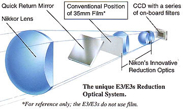 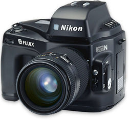

Grootte en gewicht van de lens
Kleinere sensors vereisen lichtere lenzen (voor een zelfde afbeeldingsgrootte, zoom bereik en diafragma bereik). Dit verschil kan bvb zeer belangrijk zijn in het geval van natuurfotografie waarbij men meestal zware lenzen en apperatuur gedurende een lange tijd en over een grote afstand moet dragen. De onderstaande figuur illustreert deze trend voor een aantal Canon lenzen typisch voor sport- en natuurfotografie:
 |
 |
 |
||
| EF 200mm f/2.8L II USM 770 gram |
EF 300mm f/2.8L IS USM 2540 gram |
EF 400mm f/2.8L IS USM 5352 gram |
Een gevolg hiervan is dat indien men een zelfde afbeeldingsgrootte wenst van het onderwerp op een kleinbeeld camera als wanneer men fotografeert met een 200 mm f/2.8 lens op een camera met een 1.5X crop factor, men een 300 mm f/2.8 lens nodig heeft die 3.5X zoveel weegt! Daarenboven is de 300 mm lens veel groter zijn en trekt deze veel meer aandacht dan de 200 mm lens, iets wat niet altijd gewenst is. En natuurlijk kost de zwaardere lens meer dan de licht lens.
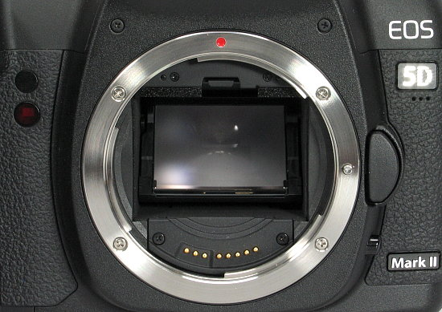
Voor spiegelreflex camera's betekent een grotere sensor ook een grotere en heldere zoeker, hetgeen zeker helpt bij het manueel scherpstellen. Nadeel is dan weer dat het grotere prisma en spiegel die nodig zijn om het licht naar de zoeker te brengen de camera zwaarder maakt.
Scherptediepte
Als de afmetingen van de sensor vergroot, zal de scherptediepte bij een identiek diafragma en afbeeldingsgrootte verkleinen. Dit komt omdat we met een grotere sensor dichter bij het onderwerp moeten komen of een lens met een langere brandpuntsafstand moeten gebruiken om ons beeld te vullen met het onderwerp. Om dezelfde scherptediepte te hebben op een grotere sensor moeten we een kleinere diafragmaopening gebruiken.
Een voorbeeld: als men een zelfde beeld wil maken (afbeeldingsgrootte en scherptediepte) op een kleinbeeld sensor als met een 20 mm lens op f/8 op een camera met een 1.6X crop factor, dan heeft men een 32 mm lens met diafragma f/12.8 nodig. Dit is doenbaar. Maar wat met het volgende voorbeeld. Als men een 50 mm f/1.4 lens op een kleinbeeld sensor gebruikt, heeft men op een camera met een 1.6X crop factor een 31 mm lens met een diafragma van f/0.9 nodig -- onbestaand op een consumenten lens!
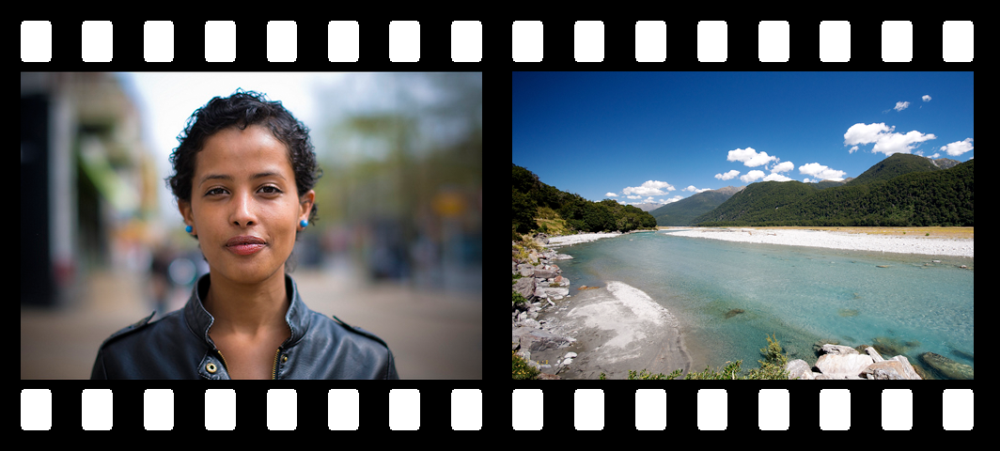
Een kleinere scherptediepte is aangewezen als men een onderwerp wil los maken van de achtergrond, bvb een personage tov een drukke achtergrond. Een grote scherptediepte is aangewezen in situaties waarbij men alles scherp wil zien zoals bvb een foto van een landschap. Compact camera's met een kleine sensor zijn dus minder geschikt voor portret fotografie maar zeer goed voor landschapsfotografie. Terwijl camera's met een grote sensor veel licht nodig hebben om een grote scherptediepte te bereiken.
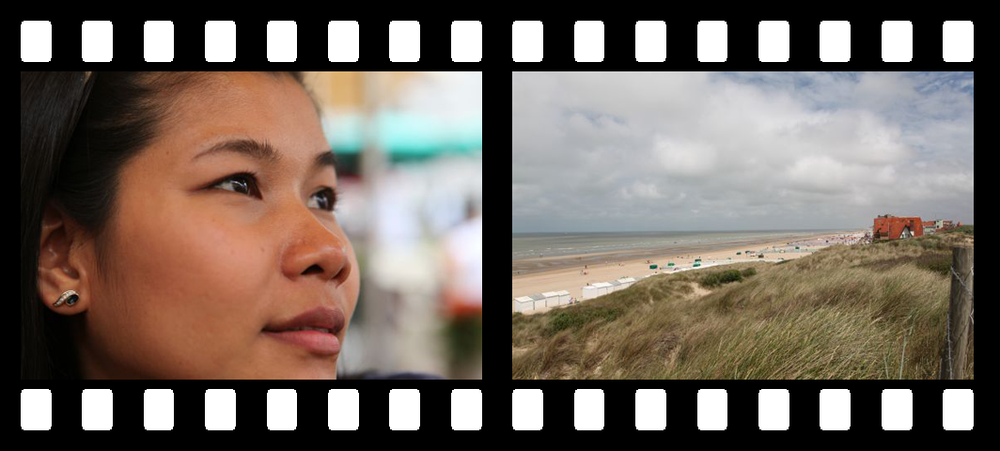
Merk op dat we er in de bovenstaande berekening vanuit gaan dat de nieuwe lens op sensor #2 een beeld kan produceren met dezelfde afbeeldingsgrootte als het beeld op sensor #1. Als we echter op sensor #2 dezelfde lens gebruiken als op sensor #1 dan moeten we dichter (sensor #2 > sensor #1) bij of verder (sensor #2 < sensor #1) van het onderwerp staan om dezelfde afbeeldingsgrootte te verkrijgen. We zullen ons diafragma meer moeten sluiten (sensor #2 > sensor #1) of meer moeten openen (sensor #2 < sensor #1) omdezelfde scherptediepte in het beeld waar te nemen.
Een korte video die het verband toont tussen het diafragma en de scherptediepte.
Apertures from Trammell Hudson on Vimeo.
Diffractie en pixelgrootte
Grote sensors hebben meestal minder last van onscherpte die te wijten is aan de Airy schijf. Dit komt omdat grote sensors meestal ook grotere pixels hebben. De grootte van de Airy schijf is afhankelijk van de het diafragma en de golflengte van het licht. Grotere sensors (met grotere pixels) kunnen een kleinere diafragma-opening gebruiken vooraleer de diffractie groter wordt dan de afmeting van de pixel.
Hieronder kan je berekenen vanaf welk diafragma bij een bepaalde sensorgrootte en pixel densiteit, de diffractie de scherpte doet afnemen. Of maw wanneer de Airy schijf groter wordt dan de pixel afmeting
De onscherpte die te wijten is aan de diffractie gebeurt geleidelijk. Een diafragme dat lichtelijk groter of kleiner is dan het hierboven berekende diafragma zal niet plots een groot verschil in kwaliteit opleveren. Op de Canon 5D Mark II bvb kan men gerust een diafragma van f/11 gebruiken zonder dat de onscherpte te wijten aan de Airy schijf direkt zichtbaar wordt. Verder moet men er ook rekening mee houden dat hierboven een theoretische limiet wordt berekend, de karakteristeken van de lens spelen ook een rol. De volgende figuur toont de grootte van de Airy schijf tov de pixels voor een 2 verschillende diafragme-openingen :
|
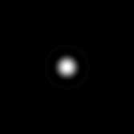
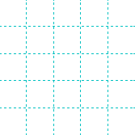
|
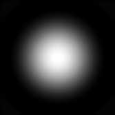
|
|
| Pixel grootte beperkt de scherpte (Weinig scherptediepte f/5.6) |
Airy schijf beperkt de scherpte (Veel scherptediepte f/22) |
Vanaf het maximum diafragma zal een verhoging van de scherptediepte leiden tot een vermindering van de scherpte op het scherpte vlak. Maw het totaal beeld ziet er scherper uit maar de scherpste voorwerpen worden minder scherp.
Een belangrijk gevolg van is dat indien men een zelfde scherptediepte wil bereiken men bij grote sensors ook grotere pixels nodig heeft. Dit is omdat men bij een grotere sensor het diafragma meer moet sluiten om een zelfde scherptediepte te bereiken.
Ruis niveau & dynamisch bereik
Grotere sensors hebben meestal grotere pixels (alhoewel dit niet altijd het geval is), wat hen de mogelijkheid geeft om minder ruis te produceren en hen dus een groter dynamisch bereik geeft. Dynamisch bereik is aantral verschillende waarden die een sensor produceert tussen puur wit en het diepste zwart net boven het ruis niveau. Meestal uitgedrukt in een aantal stops. Aangezien grote pixels een groter volume hebben -- en dus meer photonen kunnen opvangen -- hebben deze sensoren een groter dynamisch bereik.
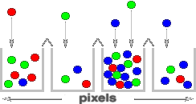
Grotere pixels vangen meer photonen gedurende een bepaalde belichtingstijd, het afleverde signaal is dus veel sterker dan voor een kleinere pixel. Het ruisniveau van grote en kleine pixels is echter redelijk gelijk wat resulteert in een betere signaal/ruis verhouding voor grotere pixels -- en bijgevolg mooiere foto's.
| 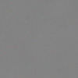 | 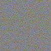 | |
| Grotere pixels (Dikwijls grotere sensors) |
Kleinere pixels (Dikwijls kleinere sensors) |
De hoeveelheid achtergrondruis hangt ook af van de wijze waarop de sensor geproduceerd is. In het algemeen kan men echter stellen dat het bovenstaande waar is. Een ander aspect is dat wanneer 2 sensors hetzelfde ruisniveau per pixel hebben en dezelfde pixelgrootte, de grotere sensor een beter beeld zal produceren. Dit komt omdat de grotere sensor minder moet vergroot worden dan de kleine sensor om dezelfde beeldgrootte te bereiken. De ruis in de grote sensor wordt dus minder vergroot dan de ruis in de kleine sensor.
Productiekost van digitale sensors
De kost van een digitale sensor stijgt dramatisch met de oppervlakte. Dwz dat de kost van een sensor die 2 maal groter is meer dan 2 maal zoveel kost.
| 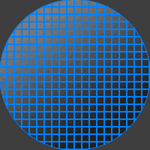 | 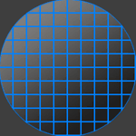 | |
| Silicium Wafer (verdeelt in kleine sensors) |
Silicium Wafer (verdeelt in grote sensors) |
Dit is te begrijpen als men kijkt naar de manier waarop fabriekanten digitale sensors maken. Elke sensor wordt uit een grote schijf - een wafer - silicoon gesneden. Deze schijf bevat duizende sensors. De productiekost van een wafer is ongeveer gelijk ongeacht het aantal chips op de wafer. Dus hoe minder chips of sensors op een wafer hoe duurder elke sensor. Verder bevinden er zich op elke wafer wel een aantal fouten. De sensors die deze fouten bevatten zijn verloren voor de productie. Hoe groter de sensor hoe groter de kans dat er een fout in zit en bijgevolg hoe groter het productieverlies.
Conclusie
Grote sensors hebben veel minder scherptediepte. Aan de andere kant kan men een kleiner diafragma opening gebruiken vooraleer de difractie onscherpte zichtbaar wordt. Welke optie produceert de scherptste beelden? Grote sensoren met hun groter pixel aantal produceren ongetwijfeld meer gedetailleerde beelden maar hebben minder scherptediepte dan kleinere sensoren. En als je dezelfde scherptediepte wil behouden hebben grote sensors niet noodzakelijk een resolutievoordeel.
De beperking in scherptediepte te wijten aan difractie (Airy schijf) is voor alle sensor groottes gelijk. Of met andere woorden indien met het kleinste dafragma zou gebruiken vooraleer de difractie zichtbaar wordt dan zouden alle sensor groottes een zelfde scherptediepte vertonen.
Opmerking: We gaan er hier van uit dat voor elke sensor de pixel grootte ongeveer even groot is dan de Airy schijf en dat elke lens van dezelfde kwaliteit is.
Een ander belangrijk resultaat is dat als de scherptediepte gelijk moet blijven, een grotere sensor een langere belichtingstijd vereist. Dit is niet onbelangrijk in het geval van macro en nachtopnames, waar een grote scherptediepte en een korte belichtingstijds dikwijls een vereiste zijn.

Aan de andere kant hebben grotere sensors meestal ook een grotete signaal/ruis verhouding waardoor men hogere ISO waarden kan gebruken en men dus toch minder licht nodig heeft.
Algemeen kan men stellen dat grotere sensors ons meer controle en artistiek vrijheid opleveren maar dat men ook grotere en duurdere lenzen nodig heeft.. We kunnen opnames maken met zeer weinig scherptediepte wat ons een typische film-look oplevert die we niet kunnen krijgen met een kleine sensor. Terzeldertijd is het toch mogelijk een redelijk scherptediepte te bereiken door gebruik te maken van de hogere ISO waarden en een kleiner diafragma.